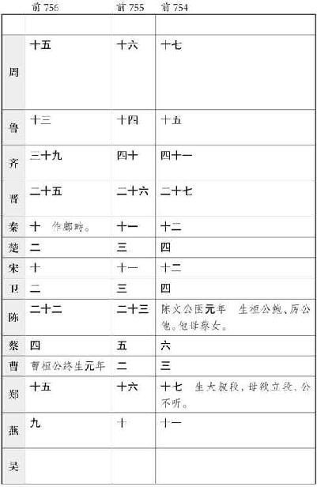

史记卷六十七
仲尼弟子列传第七
孔子 曰“受业身通者七十有七人”，皆异能之士也。德行：颜渊 ，闵子骞 ，冉伯牛 ，仲弓 。政事：冉有 ，季路 。言语：宰我 ，子贡 。文学：子游 ，子夏 。师 也辟，参 也鲁，柴 也愚，由 也喭，回 也屡空。赐 不受命而货殖焉，亿则屡中。
孔子
之所严事：于周
则老子
；于卫
，蘧伯玉
；于齐
，晏平仲
；于楚
，老莱子
；于郑
，子产
；于鲁
，孟公绰
。数称臧文仲
、柳下惠
、铜鞮伯华
、介山子然
，孔子
皆后之，不并世。
颜回 者，鲁 人也，字子渊 。少孔子 三十岁。
颜渊 问仁，孔子 曰：“克己复礼，天下归仁焉。”
孔子 曰：“贤哉回 也！一箪食，一瓢饮，在陋巷，人不堪其忧，回 也不改其乐。”“回 也如愚；退而省其私，亦足以发，回 也不愚。”“用之则行，舍之则藏，唯我与尔有是夫！”
回
年二十九，发尽白，蚤死。孔子
哭之恸，曰：“自吾有回
，门人益亲。”鲁哀公
问：“弟子孰为好学？”孔子
对曰：“有颜回
者好学，不迁怒，不贰过。不幸短命死矣，今也则亡。”
闵损 字子骞 。少孔子 十五岁。
孔子 曰：“孝哉闵子骞 ！人不间于其父母昆弟之言。”不仕大夫，不食污君之禄。“如有复我者，必在汶上 矣。”
冉耕 字伯牛 。孔子 以为有德行。
伯牛 有恶疾，孔子 往问之，自牖执其手，曰：“命也夫！斯人也而有斯疾，命也夫！”
冉雍 字仲弓 。
仲弓 问政，孔子 曰：“出门如见大宾，使民如承大祭。在邦无怨，在家 无怨。”
孔子 以仲弓 为有德行，曰：“雍 也可使南面。”
仲弓 父，贱人。孔子 曰：“犁牛之子骍且角，虽欲勿用，山川其舍诸？”
冉求 字子有 ，少孔子 二十九岁。为季氏 宰。
季康子 问孔子 曰：“冉求 仁乎？”曰：“千室之邑，百乘之家，求 也可使治其赋。仁则吾不知也。”复问：“子路 仁乎？”孔子 对曰：“如求 。”
求
问曰：“闻斯行诸？”子曰：“行之。”子路
问：“闻斯行诸？”子曰：“有父兄在，如之何其闻斯行之！”子华
怪之，“敢问问同而答异？”孔子
曰：“求
也退，故进之。由
也兼人，故退之。”
仲由 字子路 ，卞 人也。少孔子 九岁。
子路 性鄙，好勇力，志伉直，冠雄鸡，佩豭豚，陵暴孔子 。孔子 设礼稍诱子路 ，子路 后儒服委质，因门人请为弟子。
子路 问政，孔子 曰：“先之，劳之。”请益。曰“无倦。”
子路 问：“君子尚勇乎？”孔子 曰：“义之为上。君子好勇而无义则乱，小人好勇而无义则盗。”
子路 有闻，未之能行，唯恐有闻。
孔子 曰：“片言可以折狱者，其由 也与！”“由 也好勇过我，无所取材。”“若由 也，不得其死然。”“衣敝缊袍与衣狐貉者立而不耻者，其由 也与！”“由 也升堂矣，未入于室也。”
季康子 问：“仲由 仁乎？”孔子 曰：“千乘之国可使治其赋，不知其仁。”
子路 喜从游，遇长沮 、桀溺 、荷 丈人 。
子路 为季氏 宰，季孙 问曰：“子路 可谓大臣与？”孔子 曰：“可谓具臣矣。”
子路 为蒲 大夫，辞孔子 。孔子 曰：“蒲 多壮士，又难治。然吾语汝：恭以敬，可以执勇；宽以正，可以比众；恭正以静，可以报上。”
初，卫灵公 有宠姬曰南子 。灵公 太子蒉聩 得过南子 ，惧诛出奔。及灵公 卒而夫人欲立公子郢 。郢 不肯，曰：“亡人太子之子辄 在。”于是卫 立辄 为君，是为出公 。出公 立十二年，其父蒉聩 居外，不得入。子路 为卫 大夫孔悝 之邑宰。蒉聩 乃与孔悝 作乱，谋入孔悝 家，遂与其徒袭攻出公 。出公 奔鲁 ，而蒉聩 入立，是为庄公 。方孔悝 作乱，子路 在外，闻之而驰往。遇子羔 出卫 城门，谓子路 曰：“出公 去矣，而门已闭，子可还矣，毋空受其祸。”子路 曰：“食其食者不避其难。”子羔 卒去。有使者入城，城门开，子路 随 而入。造蒉聩 ，蒉聩 与孔悝 登台。子路 曰：“君焉用孔悝 ？请得而杀之。”蒉聩 弗听。于是子路 欲燔台，蒉聩 惧，乃下石乞 、壶黡 攻子路 ，击断子路 之缨。子路 曰：“君子死而冠不免。”遂结缨而死。
孔子
闻卫
乱，曰：“嗟乎，由
死矣！”已而果死。故孔子
曰：“自吾得由
，恶言不闻于耳。”是时子贡
为鲁使于齐
。
宰予 字子我 。利口辩辞。既受业，问：“三年之丧不已久乎？君子三年不为礼，礼必坏；三年不为乐，乐必崩。旧谷既没，新谷既升，钻燧改火，期可已矣。”子曰：“于汝安乎？”曰：“安。”“汝安则为之。君子居丧，食旨不甘，闻乐不乐，故弗为也。”宰我 出，子曰：“予 之不仁也！子生三年然后免于父母之怀。夫三年之丧，天下之通义也。”
宰予 昼寝。子曰：“朽木不可雕也，粪土之墙不可圬也。”
宰我 问五帝 之德，子曰：“予 非其人也。”
宰我
为临菑
大夫，与田常
作乱，以夷其族，孔子
耻之。
端沐赐 ，卫 人，字子贡 。少孔子 三十一岁。
子贡 利口巧辞，孔子 常黜其辩。问曰：“汝与回 也孰愈？”对曰：“赐 也何敢望回 ！回 也闻一以知十，赐 也闻一以知二。”
子贡 既已受业，问曰：“赐 何人也？”孔子 曰：“汝器也。”曰：“何器也？”曰：“瑚琏也。”
陈子禽 问子贡 曰：“仲尼 焉学？”子贡 曰：“文武 之道未坠于地，在人，贤者识其大者，不贤者识其小者，莫不有文武 之道。夫子焉不学，而亦何常师之有！”又问曰：“孔子 适是国必闻其政。求之与？抑与之与？”子贡 曰：“夫子温良恭俭让以得之。夫子之求之也，其诸异乎人之求之也。”
子贡 问曰：“富而无骄，贫而无谄，何如？”孔子 曰：“可也；不如贫而乐道，富而好礼。”
田常 欲作乱于齐 ，惮高 、国 、鲍 、晏 ，故移其兵欲以伐鲁 。孔子 闻之，谓门弟子曰：“夫鲁 ，坟墓所处，父母之国。国危如此，二三子何为莫出？”子路 请出，孔子 止之。子张 、子石 请行，孔子 弗许。子贡 请行，孔子 许之，遂行。至齐 ，说田常 曰：“君之伐鲁 过矣。夫鲁 ，难伐之国，其城薄以卑，其地狭以泄，其君愚而不仁，大臣伪而无用，其士民又恶甲兵之事，此不可与战。君不如伐吴 。夫吴 ，城高以厚，地广以深，甲坚以新，士选以饱，重器精兵尽在其中，又使明大夫守之，此易伐也。”田常 忿然作色曰：“子之所 难，人之所易；子之所易，人之所难。而以教常 ，何也？”子贡 曰：“臣闻之，忧在内者攻强，忧在外者攻弱。今君忧在内。吾闻君三封而三不成者，大臣有不听者也。今君破鲁 以广齐 ，战胜以骄主，破国以尊臣，而君之功不与焉，则交日疏于主。是君上骄主心，下恣群臣，求以成大事，难矣。夫上骄则恣，臣骄则争，是君上与主有郤，下与大臣交争也。如此，则君之立于齐 危矣。故曰不如伐吴 。伐吴 不胜，民人外死，大臣内空，是君上无强臣之敌，下无民人之过，孤主制齐 者唯君也。”田常 曰：“善。虽然，吾兵业已加鲁 矣，去而之吴 ，大臣疑我，奈何？”子贡 曰：“君按兵无伐，臣请往使吴王 ，令之救鲁 而伐齐 ，君因以兵迎之。”田常 许之，使子贡 南见吴王 。
说曰：“臣闻之，王者不绝世，霸者无强敌，千钧之重加铢两而移。今以万乘之齐 而私千乘之鲁 ，与吴 争强，窃为王危之。且夫救鲁 ，显名也；伐齐 ，大利也。以抚泗上 诸侯，诛暴齐 以服强晋 ，利莫大焉。名存亡鲁 ，实困强齐 ，智者不疑也。”吴王 曰：“善。虽然，吾尝与越 战，栖之会稽 。越王 苦身养士，有报我心。子待我伐越 而听子。”子贡 曰：“越 之劲不过鲁 ，吴 之强不过齐 ，王置齐 而伐越 ，则齐 已平鲁 矣。且王方以存亡继绝为名，夫伐小越 而畏强齐 ，非勇也。夫勇者不辟难，仁者不穷约，智者不失时，王者不绝世，以立其义。今存越 示诸侯以仁，救鲁 伐齐 ，威加晋国 ，诸侯必相率而朝吴 ，霸业成矣。且王必恶越 ，臣请东见越王 ，令出兵以从，此实空越 ，名从诸侯以伐也。”吴王 大说，乃使子贡 之越 。
越王 除道郊迎，身御至舍而问曰：“此蛮夷之国，大夫何以俨然辱而临之？”子贡 曰：“今者吾说吴王 以救鲁 伐齐 ，其志欲之而畏越 ，曰‘待我伐越 乃可’。如此，破越 必矣。且夫无报人之志而令人疑之，拙也；有报人之志，使人知之，殆也；事未发而先闻，危也。三者举事之大患。”句践 顿首再拜曰：“孤尝不料力，乃与吴 战，困于会稽 ，痛入于骨髓，日夜焦唇干舌，徒欲与吴王 接踵而死，孤之愿也。”遂问子贡 。子贡 曰：“吴王 为人猛暴，群臣不堪；国家敝以数战，士卒弗忍；百姓怨上，大臣内变；子胥 以谏死，太宰嚭 用事，顺君之过以安其私：是残国之治也。今王诚发士卒佐之以徼其志，重宝以说其心，卑辞以尊其礼，其伐齐 必也。彼战不胜，王之福矣。战胜，必以兵临晋 ，臣请北见晋 君，令共攻之，弱吴 必矣。其锐兵尽于齐 ，重甲困于晋 ，而王制其敝，此灭吴 必矣。”越王 大说，许诺。送子贡 金百镒，剑一，良矛二。子贡 不受，遂行。
报吴王
曰：“臣敬以大王之言告越王
，越王
大恐，曰：‘孤不幸，少失先人，内不自量，抵罪于吴
，军败身辱，栖于会稽
，国为虚莽，赖大王之赐，使
得奉俎豆而修祭祀，死不敢忘，何谋之敢虑！’”后五日，越
使大夫种
顿首言于吴王
曰：“东海
役臣孤句践
使者臣种
，敢修下吏问于左右。今窃闻大王将兴大义，诛强救弱，困暴齐
而抚周室
，请悉起境内士卒三千人，孤请自被坚执锐，以先受矢石。因越
贱臣种
奉先人藏器，甲二十领， 屈卢之矛，步光之剑，以贺军吏。”吴王
大说，以告子贡
曰：“越王
欲身从寡人伐齐
，可乎？”子贡
曰：“不可。夫空人之国，悉人之众，又从其君，不义。君受其币，许其师，而辞其君。”吴王
许诺，乃谢越王
。于是吴王
乃遂发九郡兵伐齐
。
屈卢之矛，步光之剑，以贺军吏。”吴王
大说，以告子贡
曰：“越王
欲身从寡人伐齐
，可乎？”子贡
曰：“不可。夫空人之国，悉人之众，又从其君，不义。君受其币，许其师，而辞其君。”吴王
许诺，乃谢越王
。于是吴王
乃遂发九郡兵伐齐
。
子贡 因去之晋 ，谓晋君 曰：“臣闻之，虑不先定不可以应卒，兵不先辨不可以胜敌。今夫齐 与吴 将战，彼战而不胜，越 乱之必矣；与齐 战而胜，必以其兵临晋 。”晋君 大恐，曰：“为之奈何？”子贡 曰：“修兵休卒以待之。”晋君 许诺。
子贡 去而之鲁 。吴王 果与齐 人战于艾陵 ，大破齐 师，获七将军之兵而不归，果以兵临晋 ，与晋 人相遇黄池 之上。吴晋 争强。晋 人击之，大败吴 师。越王 闻之，涉江袭吴 ，去城七里而军。吴王 闻之，去晋 而归，与越 战于五湖 。三战不胜，城门不守，越 遂围王宫，杀夫差 而戮其相。破吴 三年，东向而霸。
故子贡 一出，存鲁 ，乱齐 ，破吴 ，强晋 而霸越 。子贡 一使，使势相破，十年之中，五国各有变。
子贡
好废举，与时转货赀。喜扬人之美，不能匿人之过。常相鲁卫
，家累千金，卒终于齐
。
言偃 ，吴 人，字子游 。少孔子 四十五岁。
子游 既已受业，为武城 宰。孔子 过，闻弦歌之声。孔子 莞尔而笑曰：“割鸡焉用牛刀？”子游 曰：“昔者偃 闻诸夫子曰，君子学道则爱人，小人学道则易使。”孔子 曰：“二三子，偃 之言是也。前言戏之耳。”孔子 以为子游 习于文学。
卜商 字子夏 。少孔子 四十四岁。
子夏 问：“‘巧笑倩兮，美目盼兮，素以为绚兮’，何谓也？”子曰：“绘事后素。”曰：“礼后乎？”孔子 曰：“商 始可与言诗 已矣。”
子贡 问：“师 与商 孰贤？”子曰：“师 也过，商 也不及。”“然则师 愈与？”曰：“过犹不及。”
子谓子夏 曰：“汝为君子儒，无为小人儒。”
孔子 既没，子夏 居西河 教授，为魏文侯 师。其子死，哭之失明。
子张 问干禄，孔子 曰：“多闻阙疑，慎言其馀，则寡尤；多见阙殆，慎行其馀，则寡悔。言寡尤，行寡悔，禄在其中矣。”
他日从在陈蔡 间，困，问行。孔子 曰：“言忠信，行笃敬，虽蛮貊之国，行也；言不忠信，行不笃敬，虽州里，行乎哉！立则见其参于前也，在舆则见其倚于衡，夫然后行。”子张 书诸绅。
子张 问：“士何如斯可谓之达矣？”孔子 曰：“何哉，尔所谓达者？”子张 对曰：“在国必闻，在家必闻。”孔子 曰：“是闻也，非达也。夫达者，质直而好义，察言而观色，虑以下人，在国及家必达。夫闻也者，色取仁而行违，居之不疑，在国及家必闻。”
曾参 ，南武城 人，字子舆 。少孔子 四十六岁。
孔子 以为能通孝道，故授之业。作孝经 。死于鲁 。
澹臺灭明 ，武城 人，字子羽 。少孔子 三十九岁。
状貌甚恶。欲事孔子 ，孔子 以为材薄。既已受业，退而修行，行不由径，非公事不见卿大夫。
南游至江 ，从弟子三百人，设取予去就，名施乎诸侯。孔子 闻之，曰：“吾以言取人，失之宰予 ；以貌取人，失之子羽 。”
宓不齐 字子贱 。少孔子 三十岁。
孔子 谓“子贱 君子哉！鲁 无君子，斯焉取斯？”
子贱 为单父 宰，反命于孔子 ，曰：“此国有贤不齐 者五人，教不齐 所以治者。”孔子 曰：“惜哉不齐 所治者小，所治者大则庶几矣。”
原宪 字子思 。
子思 问耻。孔子 曰：“国有道，谷。国无道，谷，耻也。”
子思 曰：“克伐怨欲不行焉，可以为仁乎？”孔子 曰：“可以为难矣，仁则吾弗知也。”
孔子
卒，原宪
遂亡在草泽中。子贡
相卫
，而结驷连骑，排藜藿入穷阎，过谢原宪
。宪
摄敝衣冠见子贡
。子贡
耻之，曰：“夫子岂病乎？”原宪
曰：“吾闻之，无财者谓之贫，学道而不能行者谓之病。若宪
，贫也，非病也。”子贡
惭，不怿而去，终身耻其言之过也。
公冶长 ，齐 人，字子长 。
孔子 曰：“长 可妻也，虽在累绁之中，非其罪也。”以其子妻之。
南宫括 字子容 。
问孔子 曰：“羿 善射，奡 荡舟，俱不得其死然；禹稷 躬稼而有天下？”孔子 弗答。容 出，孔子 曰：“君子哉若人！上德哉若人！”“国有道，不废；国无道，免于刑戮。”三复“白珪之玷”，以其兄之子妻之。
公皙哀 字季次 。
孔子 曰：“天下无行，多为家臣，仕于都；唯季次 未尝仕。”
曾蒧 字皙 。
侍孔子 ，孔子 曰：“言尔志。”蒧 曰：“春服既成，冠者五六人，童子六七人，浴乎沂 ，风乎舞雩，咏而归。”孔子 喟尔叹曰：“吾与蒧 也！”
颜无繇 字路 。路 者，颜回 父，父子尝各异时事孔子 。
颜回 死，颜路 贫，请孔子 车以葬。孔子 曰：“材不材，亦各言其子也。鲤 也死，有棺而无椁，吾不徒行以为之椁，以吾从大夫之后，不可以徒行。”
商瞿 ，鲁 人，字子木 。少孔子 二十九岁。
孔子
传易
于瞿
，瞿
传楚
人 臂子弘
，弘
传江东
人矫子庸疵
，疵
传燕
人周子家竖
，竖
传淳于
人光子乘羽
，羽
传齐
人田子庄何
，何
传东武
人王子中同
，同
传菑川
人杨何
。何元朔
中以治易
为汉
中大夫。
臂子弘
，弘
传江东
人矫子庸疵
，疵
传燕
人周子家竖
，竖
传淳于
人光子乘羽
，羽
传齐
人田子庄何
，何
传东武
人王子中同
，同
传菑川
人杨何
。何元朔
中以治易
为汉
中大夫。
高柴 字子羔 。少孔子 三十岁。
子羔 长不盈五尺，受业孔子 ，孔子 以为愚。
子路 使子羔 为费郈 宰，孔子 曰：“贼夫人之子！”子路 曰：“有民人焉，有社稷焉，何必读书然后为学！”孔子 曰：“是故恶夫佞者。”
漆彫开 字子开 。
孔子 使开 仕，对曰：“吾斯之未能信。”孔子 说。
公伯缭 字子周 。
周 愬子路 于季孙 ，子服景伯 以告孔子 ，曰：“夫子固有惑志，缭 也吾力犹能肆诸市朝。”孔子 曰：“道之将行，命也；道之将废，命也。公伯缭 其如命何！”
司马耕 字子牛 。
牛 多言而躁。问仁于孔子 ，孔子 曰：“仁者其言也讱。”曰：“其言也讱，斯可谓之仁乎？”子曰：“为之难，言之得无讱乎！”
问君子，子曰：“君子不忧不惧。”曰：“不忧不惧，斯可谓之君子乎？”子曰：“内省不疚，夫何忧何惧！”
樊须 字子迟 。少孔子 三十六岁。
樊迟 请学稼，孔子 曰：“吾不如老农。”请学圃，曰：“吾不如老圃。”樊迟 出，孔子 曰：“小人哉樊须 也！上好礼，则民莫敢不敬；上好义，则民莫敢不 服；上好信，则民莫敢不用情。夫如是，则四方之民襁负其子而至矣，焉用稼！”
樊迟
问仁，子曰：“爱人。”问智，曰：“知人。”
有若 少孔子 四十三岁。有若 曰：“礼之用，和为贵，先王之道斯为美。小大由之，有所不行；知和而和，不以礼节之，亦不可行也。”“信近于义，言可复也；恭近于礼，远耻辱也；因不失其亲，亦可宗也。”
孔子
既没，弟子思慕，有若
状似孔子
，弟子相与共立为师，师之如夫子时也。他日，弟子进问曰：“昔夫子当行，使弟子持雨具，已而果雨。弟子问曰：‘夫子何以知之？’夫子曰：‘诗
不云乎？“月离于毕
，俾滂沱矣。”昨暮月不宿毕
乎？’他日，月宿毕
，竟不雨。商瞿
年长无子，其母为取室。孔子
使之齐
，瞿
母请之。孔子
曰：‘无忧，瞿
年四十后当有五丈夫子。’已而果然。敢问夫子何以知此？”有若
默然无以应。弟子起曰：“有子
避之，此非子之座也！”
公西赤 字子华 。少孔子 四十二岁。
子华 使于齐 ，冉有 为其母请粟。孔子 曰：“与之釜。”请益，曰：“与之庾。”冉子 与之粟五秉。孔子 曰：“赤 之适齐 也，乘肥马，衣轻裘。吾闻君子周急不继富。”
巫马施 字子旗 。少孔子 三十岁。
陈司败 问孔子 曰：“鲁昭公 知礼乎？”孔子 曰：“知礼。”退而揖巫马旗 曰：“吾闻君子不党，君子亦党乎？鲁 君娶吴 女为夫人，命之为孟子 。孟子 姓姬 ，讳称同姓，故谓之孟子 。鲁 君而知礼，孰不知礼！”施 以告孔子 ，孔子 曰：“丘 也幸，苟有过，人必知之。臣不可言君亲之恶，为讳者，礼也。”
梁鳣 字叔鱼 。少孔子 二十九岁。
颜幸 字子柳 。少孔子 四十六岁。
冉孺 字子鲁 。少孔子 五十岁。
曹恤 字子循 。少孔子 五十岁。
伯虔 字子析 。少孔子 五十岁。
公孙龙 字子石 。少孔子 五十三岁。
自子石 已右三十五人，显有年名及受业，闻见于书传。其四十有二人，无年及不见书传者纪于左：
冉季 字子产 。
秦祖 字子南 。
漆雕哆 字子敛 。
颜高 字子骄 。
漆雕徒父 。
壤驷赤 字子徒 。
商泽 。
石作蜀 字子明 。
任不齐 字选 。
公良孺 字子正 。
后处 字子里 。
秦冉 字开 。
公夏首 字乘 。
奚容箴 字子皙 。
公肩定 字子中 。
颜祖 字襄 。
鄡单 字子家 。
句井疆 。
罕父黑 字子索 。
秦商 字子丕 。
申党 字周 。
颜之仆 字叔 。
荣旂 字子祈 。
县成 字子祺 。
左人郢 字行 。
燕伋 字思 。
郑国 字子徒 。
秦非 字子之 。
施之常 字子恒 。
颜哙 字子声 。
步叔乘 字子车 。
原亢 字籍 。
乐欬 字子声 。
叔仲会 字子期 。
颜何 字冉 。
狄黑 字皙 。
邦巽 字子敛 。
孔忠 。
公西舆如 字子上 。
公西葴
字子上
。
太史公 曰：学者多称七十子之徒，誉者或过其实，毁者或损其真，钧之未睹厥容貌，则论言弟子籍，出孔氏 古文近是。余以弟子名姓文字悉取论语 ，弟子问并次为篇，疑者阙焉。